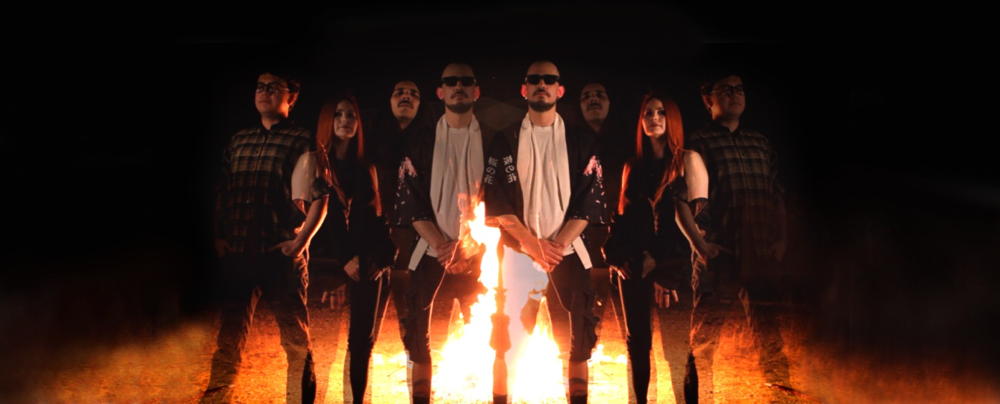

LOST NEBULA: EL SONIDO DEL DESIERTO EN QUE ARDA EL MUNDO

Desde el corazón de Hermosillo, Sonora, la agrupación Lost Nebula continúa expandiendo su universo sonoro con el estreno de su más reciente sencillo: “Que Arda El Mundo”. Este lanzamiento representa el tercer peldaño de una "nueva era" para la banda, consolidando un sonido que es tan potente como sofisticado.
La banda logra una amalgama perfecta entre la técnica del metal progresivo y una pegada emocional inmediata. "Que Arda El Mundo" destaca por mantener ese dinamismo característico del desierto sonorense, proyectando una atmósfera expansiva que se siente moderna y auténtica a la vez.

DYNAMISMO Y SOFISTICACIÓN
El sencillo es un viaje sonoro que demuestra la madurez compositiva de la banda. A través de estructuras complejas pero accesibles, Lost Nebula invita al oyente a sumergirse en una pieza donde la agresividad del metal se equilibra con una producción impecable y texturas atmosféricas de gran alcance.

ANÁLISIS: QUE ARDA EL MUNDO
- CONCEPTO: Tercer sencillo de la nueva etapa creativa.
- DINÁMICA: Metal progresivo con enfoque alternativo.
- SONIDO: Atmósferas expansivas y técnica depurada.
- STATUS: Disponible en todas las plataformas digitales.